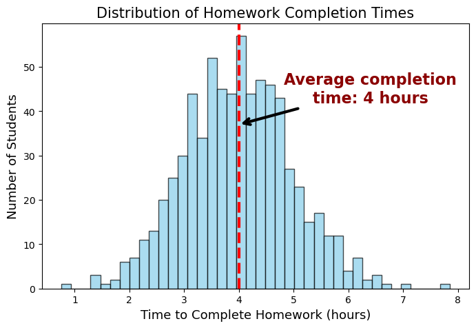

import numpy as np
import matplotlib.pyplot as plt
np.random.seed(42)
# Parameters for the distribution
mean_time = 4
std_dev_time = 1
num_students = 700
# Generate random times following a normal distribution
completion_times = np.random.normal(mean_time, std_dev_time, num_students)
# Ensure no negative times (truncate at 0)
completion_times = np.clip(completion_times, 0, None)
mean_completion_time = round(np.mean(completion_times))
# Plot the distribution
plt.figure(figsize=(8, 5))
plt.hist(completion_times, bins=40, color='skyblue', edgecolor='black', alpha=0.7)
plt.title('Distribution of Homework Completion Times', size=15)
plt.xlabel('Time to Complete Homework (hours)', size=13)
plt.ylabel('Number of Students', size=13)
plt.axvline(mean_completion_time, color='red', linestyle='dashed', linewidth=3, label='Mean')
plt.annotate(
f'Average completion\ntime: {mean_completion_time} hours',
xy=(mean_completion_time, 37), # Point to the mean line
xytext=(mean_completion_time + 2.4, 45), # Position of the text
arrowprops=dict(facecolor='black', arrowstyle='->', linewidth=3),
fontsize=16,
weight='bold',
color='darkred',
ha='center',
va='center'
)
plt.savefig("../img/homework_completion_distribution.png")
plt.show()
